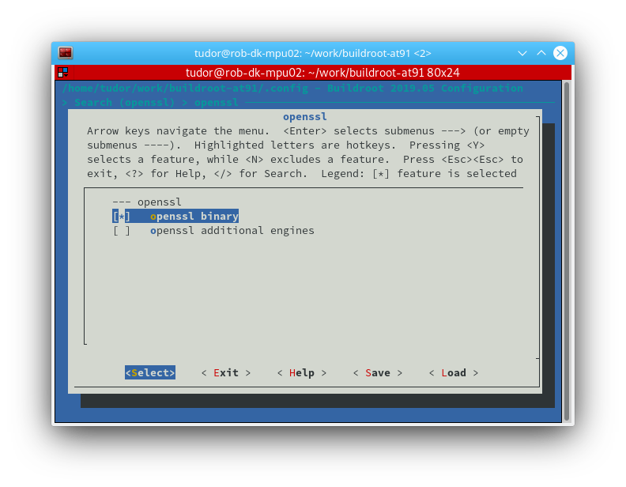
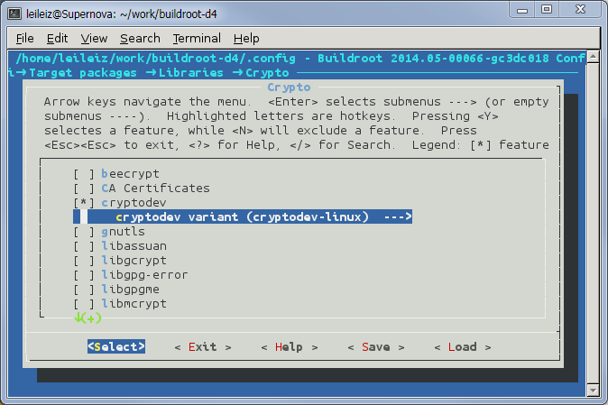
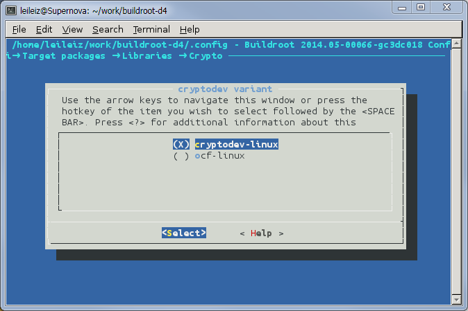
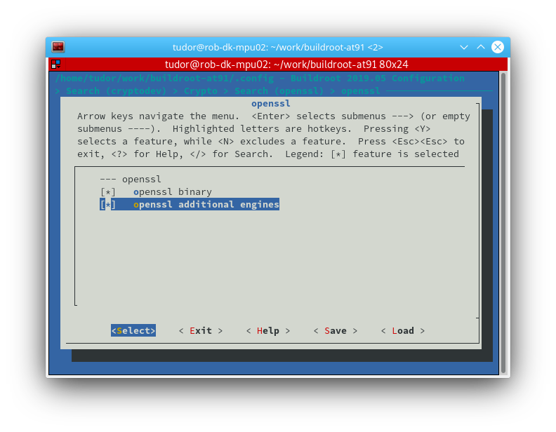
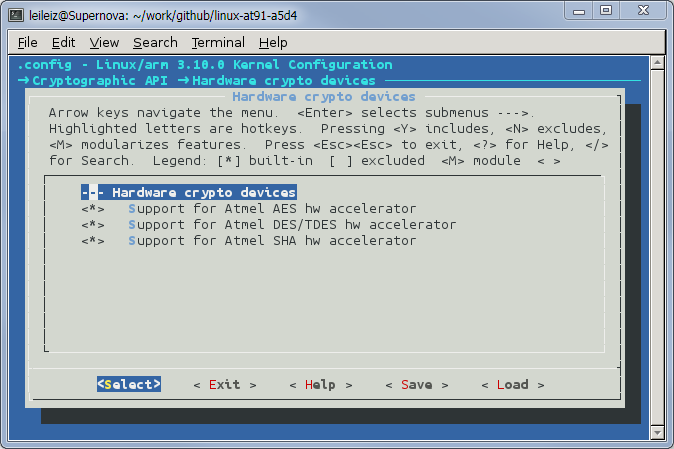

Crypto hardware acceleration
Introduction
This page is mainly about how to use crypto hardware acceleration in OpenSSL.Many internet applications such as OpenSSH and OpenVPN depends on OpenSSL to do encryption/decryption. So this can accelerate the crypto speed and reduce the CPU usage than software implementation.Hardware Support
The crypto is supported in AT91SAM9G46, AT91SAM9CN11, AT91SAMA5D3, AT91SAMA5D4.| algo\board | AT91SAM9G46 | AT91SAM9CN11 | AT91SAMA5D3 | AT91SAMA5D4 | AT91SAMA5D2 |
| SHA1 | X | X | X | X | X |
| SHA256 | X | X | X | X | X |
| SHA224 | - | X | X | X | X |
| SHA384 | - | - | X | X | X |
| SHA512 | - | - | X | X | X |
| HMAC-SHAx | - | - | - | - | X |
| DES | X | - | X | X | X |
| TDES | X | - | X | X | X |
| AES-ECB | X | X | X | X | X |
| AES-CBC | X | X | X | X | X |
| AES-OFB | X | X | X | X | X |
| AES-CFB | X | X | X | X | X |
| AES-CTR | X | X | X | X | X |
| AES-GCM | - | - | - | X | X |
| AES-XTS | - | - | - | - | X |
| AEAD AES+HMAC-SHA | - | - | - | - | X |
Prerequisites
The hardware acceleration is implemented as a driver in kernel space. In order to use it in user space application, the third party kernel module is needed to convert the request of user space into kernel space. It provides the interface for user space to use. And OpenSSL can use it. There are two candidates, one is ocf-linux, and the other is cryptodev-linux. There is a third candidate called afalg, which supports fewer algorithms. They can be selected and built in buildroot.cryptodev-linux
Cryptodev-linuxocf-linux
OCF-Linuxaf_alg
Starting in OpenSSL 1.1.0, an AF_ALG engine can be used. The AF_ALG interface uses sockets to allow access to the kernel crypto algorithms, so you won't see a /dev/crypto interface associated with it.Building the openssl binary and the user space interface
openssl binary
Entering buildroot source directory:make menuconfigMake sure the openssl binary and the associated helper scripts will be installed to the target file system:
Target packages
--> Libraries
--> Crypto
--> cryptodev
--> openssl support (BR2_PACKAGE_OPENSSL [=y])
--> ssl library (<choice> [=y])
--> openssl (BR2_PACKAGE_LIBOPENSSL [=y])

Enter the buildroot source directory and select cryptodev. cryptodev-linux can be selected in:
Target packages
--> Libraries
--> Crypto
--> cryptodev

If you want to use ocf-linux, select it:

If you want to use additional openssl engines, like af_alg, select the following:

If cryptodev is built and installed in root filesystem, when board startup, enter command
modprobe cryptodeva device node /dev/crypto will appear. If not, the hardware drivers cannot be used in user space program. Note, the Linux kernel must be enabled in buildroot.
Configurations in Kernel
Atmel hardware driver must be enabled in kernel configuration. Entering Linux source directory:
make menuconfig
Cryptographic API
--> Hardware crypto devices

The following configs will be enabled in .config
CONFIG_CRYPTO_HW=y CONFIG_CRYPTO_DEV_ATMEL_AES=y CONFIG_CRYPTO_DEV_ATMEL_TDES=y CONFIG_CRYPTO_DEV_ATMEL_SHA=yIf you select them as modules, please enter the following commands after board up.
modprobe atmel-sha modprobe atmel-aes modprobe atmel-tdesAfter the hardware drivers are loaded, the algorithms will be registered to crypto framework. Using the following command to see them:
root@sama5d4ek:~# cat /proc/crypto | grep atmel driver : atmel-ofb-tdes driver : atmel-cfb32-tdes driver : atmel-cfb16-tdes driver : atmel-cfb8-tdes driver : atmel-cfb-tdes driver : atmel-cbc-tdes driver : atmel-ecb-tdes driver : atmel-ofb-des driver : atmel-cfb32-des driver : atmel-cfb16-des driver : atmel-cfb8-des driver : atmel-cfb-des driver : atmel-cbc-des driver : atmel-ecb-des driver : atmel-sha512 driver : atmel-sha384 driver : atmel-sha224 driver : atmel-sha256 driver : atmel-sha1 driver : atmel-cfb64-aes driver : atmel-ctr-aes driver : atmel-cfb8-aes driver : atmel-cfb16-aes driver : atmel-cfb32-aes driver : atmel-cfb-aes driver : atmel-ofb-aes driver : atmel-cbc-aes driver : atmel-ecb-aes
Applications
OpenSSL
OpenSSL is an open source toolkit implementing the Secure Socket Layer (SSL) and Transport Layer Security protocols as well as a full-strength general purpose cryptography library. We are using it with cryptodev-linux which makes the link between OpenSSL and cryptography hardware drivers. OpenSSL can do benches when we give to it "speed" parameter. Other parameters given for the benches are:- evp: algorithm name
- SHA:sha1, sha256, sha224 sha384 and sha512
- DES/TDES: des-cbc and des-ede3-cbc
- AES: aes-128-cbc, aes-192-cbc and aes-256-cbc
- elapsed: performances are calculated in taking into account time consumed in user space and kernel space. Without this parameter only user space time is used.
- mr: produce machine readable output
cat /proc/interrupts
CPU0
...
27: 0 atmel-aic5 12 Level atmel-sha
28: 0 atmel-aic5 9 Level atmel-aes
...
49: 0 atmel-aic5 11 Level atmel-tdes
Keep in mind the number of interrupts and then run an openssl speed test. AES with 128bits key example:
time -v openssl speed -evp aes-128-cbc -elapsed -mrVerify that the number of interrupts increased on the AES IP:
cat /proc/interrupts
CPU0
...
27: 0 atmel-aic5 12 Level atmel-sha
28: 247 atmel-aic5 9 Level atmel-aes
...
49: 0 atmel-aic5 11 Level atmel-tdes
If you want to accelerate the algotithm through afalg, do the following:
time -v openssl speed -evp aes-128-cbc -engine afalg -elapsed -mrVerify that the number of interrupts increased on the AES IP:
CPU0
...
27: 0 atmel-aic5 12 Level atmel-sha
28: 495 atmel-aic5 9 Level atmel-aes
...
49: 0 atmel-aic5 11 Level atmel-tdes
OpenSSH
OpenSSH (OpenBSD Secure Shell) is a set of computer programs providing encrypted communication sessions over a computer network using the SSH protocol.For the benches we are using "scp" program to copy a 20Mbytes file from Atmel board to a PC and then from the PC to Atmel board. Both client and server mode are tested.
RSA public keys are used for encryption.
Files are copied to/from /tmp directory in order to reduce the impact of memory accesses on measurements.
Moreover Atmel board and the PC are directly connected via ethernet cable.
Arguments given to scp are:
- -c : algorithm name: aes128-cbc, aes192-cbc, aes256-cbc and 3des-cbc
- source file
- destination file
- -v: verbose mode
- Atmel board is SSH client: commands are executed from it:
- From Atmel board to the PC (write access):
scp -v -c aes128-cbc /tmp/test_20M PC_user@PC_IP:/tmp
-
- From the PC to Atmel board (read access):
scp -v -c aes128-cbc PC_user@PC_IP:/tmp/test_20M /tmp/
- Atmel board is SSH server: commands are executed from the PC:
- From Atmel board to the PC (read access):
scp -v -c aes128-cbc board_user@board_IP:/tmp/test_20M /tmp
-
- From the PC to Atmel board (write access):
scp -v -c aes128-cbc /tmp/test_20M board_user@board_IP:/tmp
OpenVPN
OpenVPN is an open source software application that implements Virtual Private Network (VPN) techniques for creating secure connections. OpenVPN uses the OpenSSL library to provide encryption of both the data and control channels.For the benches we are using a point-to-point connection between Atmel board and a PC.
Atmel board and the PC are directly connected via ethernet cable. The PC is the server and Atmel board is the client.
Server and client configuration files are based on sample configuration files provided with OpenVPN source code: static-office.conf and static-home.conf. Atmel board configuration files:
- atmel-board.conf:
dev tun
#Server
remote 192.168.2.2
ifconfig 10.1.0.2 10.1.0.1
up ./atmel-board.up
secret static.key
script-security 3 system
no-replay
tun-mtu 60000
fragment 0
mssfix 0
- atmel-board.up:
#!/bin/sh
route add -net 10.0.0.0 netmask 255.255.255.0 gw $5
PC configuration files: - PC.conf:
dev tun
ifconfig 10.1.0.1 10.1.0.2
up ./PC.up
secret static.key
script-security 3 system
no-replay
tun-mtu 60000
fragment 0
mssfix 0
- PC.up:
#!/bin/sh
route add -net 10.0.1.0 netmask 255.255.255.0 gw $5
In order to change the cipher we add this parameter to both the Atmel board and the PC at openVPN startup: --cipher algorithm_name (DES-EDE3-CBC, AES-128-CBC and AES-256-CBC).
Moreover on Atmel board we also give the following parameter to openVPN to tell it to use hardware cryptography drivers: --engine cryptodev.
AES 256 bits key example: - Atmel board
- SW driver:
openvpn --config atmel-board.conf --cipher AES-2 56-CBC
-
- HW driver:
openvpn --config atmel-board.conf --engine cryptodev --cipher AES-2 56-CBC
- PC:
openvpn --config PC.conf --cipher AES-2 56-CBC
Once VPN is up performances are measured with "iperf" tool. Both client and server mode are tested. - Command executed on server:
iperf -s
- Command executed on client:
iperf -c server_IP
FAQ
Q: What algorithms are supported in hardware acceleration?
A: SHA-1, SHA-224, SHA-256, SHA-384, SHA-512. DES, TDES, AES and all the modes defined in FIPS.Q: How can I get the performance comparisions between software and hardware?
A: Disable the atmel hardware driver in kernel. The default software implementation will be selected by crypto framework. OpenSSL can be used to get the performance comparisons whether atmel hardware driver enabled or not.Q: How can I use the cyptodev interface in my own application?
A: There are several examples provided in cryptodev-linux's documents. They can be referred in your applicaions.Q: How do I know the crypto hardware acceleration is used in kernel?
A: Execute the following command and check the priority of registered algorithm. The kernel will take the highest priority If there are multiple same algorithms registered. Please ensure that there are no priority of other algorithms are higher than priority of atmel crypto driver.root@buildroot:~# cat /proc/crypto name : ofb(des3_ede) driver : atmel-ofb-tdes module : atmel_tdes priority : 100 refcnt : 1 selftest : passed type : ablkcipher async : yes blocksize : 8 min keysize : 16 max keysize : 24 ivsize : 8 geniv : <default> name : cfb32(des3_ede) driver : atmel-cfb32-tdes module : atmel_tdes priority : 100 refcnt : 1 selftest : passed type : ablkcipher async : yes blocksize : 4 min keysize : 16 max keysize : 16 ivsize : 8 geniv : <default> name : cfb16(des3_ede) driver : atmel-cfb16-tdes module : atmel_tdes priority : 100 refcnt : 1 selftest : passed type : ablkcipher async : yes blocksize : 2 min keysize : 16 max keysize : 16 ivsize : 8 geniv : <default> name : cfb8(des3_ede) driver : atmel-cfb8-tdes module : atmel_tdes priority : 100 refcnt : 1 selftest : passed type : ablkcipher async : yes blocksize : 1 min keysize : 16 max keysize : 16 ivsize : 8 geniv : <default> name : cfb(des3_ede) driver : atmel-cfb-tdes module : atmel_tdes priority : 100 refcnt : 1 selftest : passed type : ablkcipher async : yes blocksize : 8 min keysize : 16 max keysize : 16 ivsize : 8 geniv : <default> name : cbc(des3_ede) driver : atmel-cbc-tdes module : atmel_tdes priority : 100 refcnt : 1 selftest : passed type : ablkcipher async : yes blocksize : 8 min keysize : 16 max keysize : 24 ivsize : 8 geniv : <default> name : ecb(des3_ede) driver : atmel-ecb-tdes module : atmel_tdes priority : 100 refcnt : 1 selftest : passed type : ablkcipher async : yes blocksize : 8 min keysize : 16 max keysize : 24 ivsize : 0 geniv : <default> name : ofb(des) driver : atmel-ofb-des module : atmel_tdes priority : 100 refcnt : 1 selftest : passed type : ablkcipher async : yes blocksize : 8 min keysize : 8 max keysize : 8 ivsize : 8 geniv : <default> name : cfb32(des) driver : atmel-cfb32-des module : atmel_tdes priority : 100 refcnt : 1 selftest : passed type : ablkcipher async : yes blocksize : 4 min keysize : 8 max keysize : 8 ivsize : 8 geniv : <default> name : cfb16(des) driver : atmel-cfb16-des module : atmel_tdes priority : 100 refcnt : 1 selftest : passed type : ablkcipher async : yes blocksize : 2 min keysize : 8 max keysize : 8 ivsize : 8 geniv : <default> name : cfb8(des) driver : atmel-cfb8-des module : atmel_tdes priority : 100 refcnt : 1 selftest : passed type : ablkcipher async : yes blocksize : 1 min keysize : 8 max keysize : 8 ivsize : 8 geniv : <default> name : cfb(des) driver : atmel-cfb-des module : atmel_tdes priority : 100 refcnt : 1 selftest : passed type : ablkcipher async : yes blocksize : 8 min keysize : 8 max keysize : 8 ivsize : 8 geniv : <default> name : cbc(des) driver : atmel-cbc-des module : atmel_tdes priority : 100 refcnt : 1 selftest : passed type : ablkcipher async : yes blocksize : 8 min keysize : 8 max keysize : 8 ivsize : 8 geniv : <default> name : ecb(des) driver : atmel-ecb-des module : atmel_tdes priority : 100 refcnt : 1 selftest : passed type : ablkcipher async : yes blocksize : 8 min keysize : 8 max keysize : 8 ivsize : 0 geniv : <default> name : sha512 driver : atmel-sha512 module : atmel_sha priority : 100 refcnt : 1 selftest : passed type : ahash async : yes blocksize : 128 digestsize : 64 name : sha384 driver : atmel-sha384 module : atmel_sha priority : 100 refcnt : 1 selftest : passed type : ahash async : yes blocksize : 128 digestsize : 48 name : sha224 driver : atmel-sha224 module : atmel_sha priority : 100 refcnt : 1 selftest : passed type : ahash async : yes blocksize : 64 digestsize : 28 name : sha256 driver : atmel-sha256 module : atmel_sha priority : 100 refcnt : 1 selftest : passed type : ahash async : yes blocksize : 64 digestsize : 32 name : sha1 driver : atmel-sha1 module : atmel_sha priority : 100 refcnt : 1 selftest : passed type : ahash async : yes blocksize : 64 digestsize : 20 name : cfb64(aes) driver : atmel-cfb64-aes module : atmel_aes priority : 100 refcnt : 1 selftest : passed type : ablkcipher async : yes blocksize : 8 min keysize : 16 max keysize : 32 ivsize : 16 geniv : <default> name : ctr(aes) driver : atmel-ctr-aes module : atmel_aes priority : 100 refcnt : 1 selftest : passed type : ablkcipher async : yes blocksize : 16 min keysize : 16 max keysize : 32 ivsize : 16 geniv : <default> name : cfb8(aes) driver : atmel-cfb8-aes module : atmel_aes priority : 100 refcnt : 1 selftest : passed type : ablkcipher async : yes blocksize : 8 min keysize : 16 max keysize : 32 ivsize : 16 geniv : <default> name : cfb16(aes) driver : atmel-cfb16-aes module : atmel_aes priority : 100 refcnt : 1 selftest : passed type : ablkcipher async : yes blocksize : 2 min keysize : 16 max keysize : 32 ivsize : 16 geniv : <default> name : cfb32(aes) driver : atmel-cfb32-aes module : atmel_aes priority : 100 refcnt : 1 selftest : passed type : ablkcipher async : yes blocksize : 4 min keysize : 16 max keysize : 32 ivsize : 16 geniv : <default> name : cfb(aes) driver : atmel-cfb-aes module : atmel_aes priority : 100 refcnt : 1 selftest : passed type : ablkcipher async : yes blocksize : 16 min keysize : 16 max keysize : 32 ivsize : 16 geniv : <default> name : ofb(aes) driver : atmel-ofb-aes module : atmel_aes priority : 100 refcnt : 1 selftest : passed type : ablkcipher async : yes blocksize : 16 min keysize : 16 max keysize : 32 ivsize : 16 geniv : <default> name : cbc(aes) driver : atmel-cbc-aes module : atmel_aes priority : 100 refcnt : 1 selftest : passed type : ablkcipher async : yes blocksize : 16 min keysize : 16 max keysize : 32 ivsize : 16 geniv : <default> name : ecb(aes) driver : atmel-ecb-aes module : atmel_aes priority : 100 refcnt : 1 selftest : passed type : ablkcipher async : yes blocksize : 16 min keysize : 16 max keysize : 32 ivsize : 0 geniv : <default> name : stdrng driver : krng module : kernel priority : 200 refcnt : 1 selftest : passed type : rng seedsize : 0 name : lzo driver : lzo-generic module : kernel priority : 0 refcnt : 2 selftest : passed type : compression name : crc32c driver : crc32c-generic module : kernel priority : 100 refcnt : 1 selftest : passed type : shash blocksize : 1 digestsize : 4 name : deflate driver : deflate-generic module : kernel priority : 0 refcnt : 2 selftest : passed type : compression name : aes driver : aes-generic module : kernel priority : 100 refcnt : 2 selftest : passed type : cipher blocksize : 16 min keysize : 16 max keysize : 32 name : des3_ede driver : des3_ede-generic module : kernel priority : 0 refcnt : 1 selftest : passed type : cipher blocksize : 8 min keysize : 24 max keysize : 24 name : des driver : des-generic module : kernel priority : 0 refcnt : 1 selftest : passed type : cipher blocksize : 8 min keysize : 8 max keysize : 8 name : sha384 driver : sha384-generic module : kernel priority : 0 refcnt : 1 selftest : passed type : shash blocksize : 128 digestsize : 48 name : sha512 driver : sha512-generic module : kernel priority : 0 refcnt : 1 selftest : passed type : shash blocksize : 128 digestsize : 64 name : sha224 driver : sha224-generic module : kernel priority : 0 refcnt : 1 selftest : passed type : shash blocksize : 64 digestsize : 28 name : sha256 driver : sha256-generic module : kernel priority : 0 refcnt : 1 selftest : passed type : shash blocksize : 64 digestsize : 32 name : sha1 driver : sha1-generic module : kernel priority : 0 refcnt : 1 selftest : passed type : shash blocksize : 64 digestsize : 20 name : md5 driver : md5-generic module : kernel priority : 0 refcnt : 1 selftest : passed type : shash blocksize : 64 digestsize : 16 name : md4 driver : md4-generic module : kernel priority : 0 refcnt : 1 selftest : passed type : shash blocksize : 64 digestsize : 16
| WebFaqBaseForm | |
|---|---|
| Boards | Sama5d2-icp, Sam9x60EK, Sama5d27WLSom1EK, Sama5d27Som1EK, Sama5d2PtcEK, Sama5d2Xplained, Sama5d4Xplained, Sama5d4ek, Sama5d3Xplained, Sama5d3xek |
| Components | Kernel, linux-3.18-at91, linux-4.1-at91, linux-4.4-at91, linux-4.9-at91, linux-4.14-at91, linux-4.19-at91, linux-5.4-at91 |
| Summary | How to configure Crypto driver |


| I | Attachment | Action | Size | Date | Who | Comment |
|---|---|---|---|---|---|---|
| |
af_alg.png | manage | 59.2 K | 2020-01-29 - 09:46 | TudorAmbarus | Openssl additional engines like af_alg |
| |
cryptodev-linux.png | manage | 34.0 K | 2015-05-20 - 02:42 | UnknownUser | |
| |
cryptodev.png | manage | 41.9 K | 2015-05-20 - 02:41 | UnknownUser | |
| |
cryptodriver.png | manage | 39.1 K | 2015-05-20 - 02:41 | UnknownUser | |
| |
openssl-binary.png | manage | 58.2 K | 2020-01-29 - 09:45 | TudorAmbarus | Openssl Binary Kconfig |
r20 - 02 Jun 2020 - 06:37:33 - EugenHristev

{kind=link}
{kind=link}
{kind=link}
{kind=link}
{kind=link}
{kind=link}
{kind=link}
{kind=link}
{kind=link}
{kind=link}
Copyright © by the contributing authors. All material on this collaboration platform is the property of the contributing authors.
Linux® is the registered trademark of Linus Torvalds in the U.S. and other countries.
Microchip® and others, are registered trademarks or trademarks of Microchip Technology Inc. and its subsidiaries. 
Arm® and others are registered trademarks or trademarks of Arm Limited (or its affiliates). Other terms and product names may be trademarks of others.
Ideas, requests, contributions ? Connect to LinksToCommunities page.